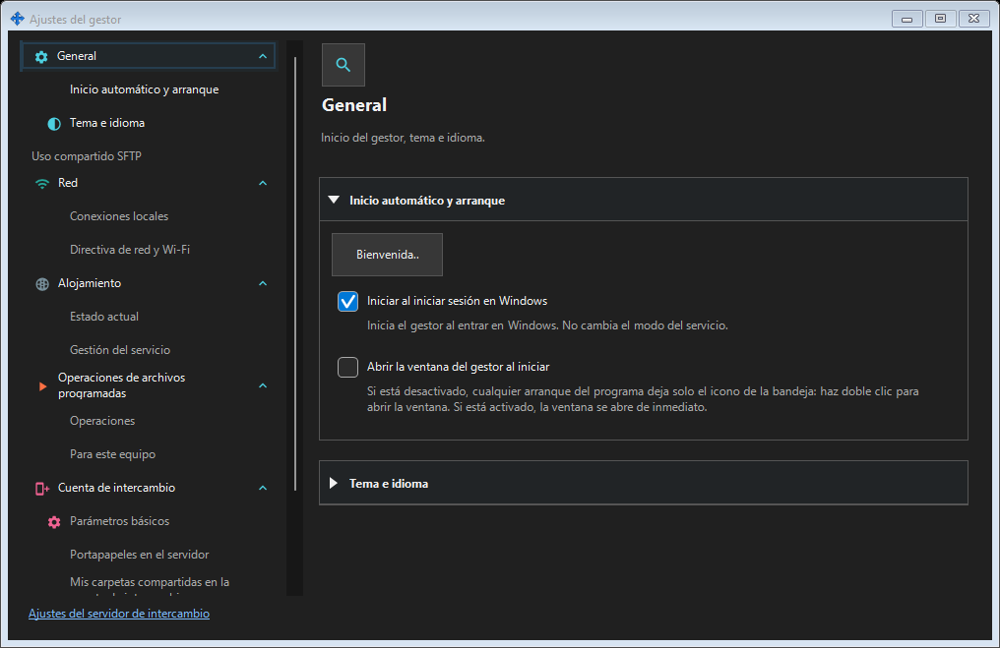
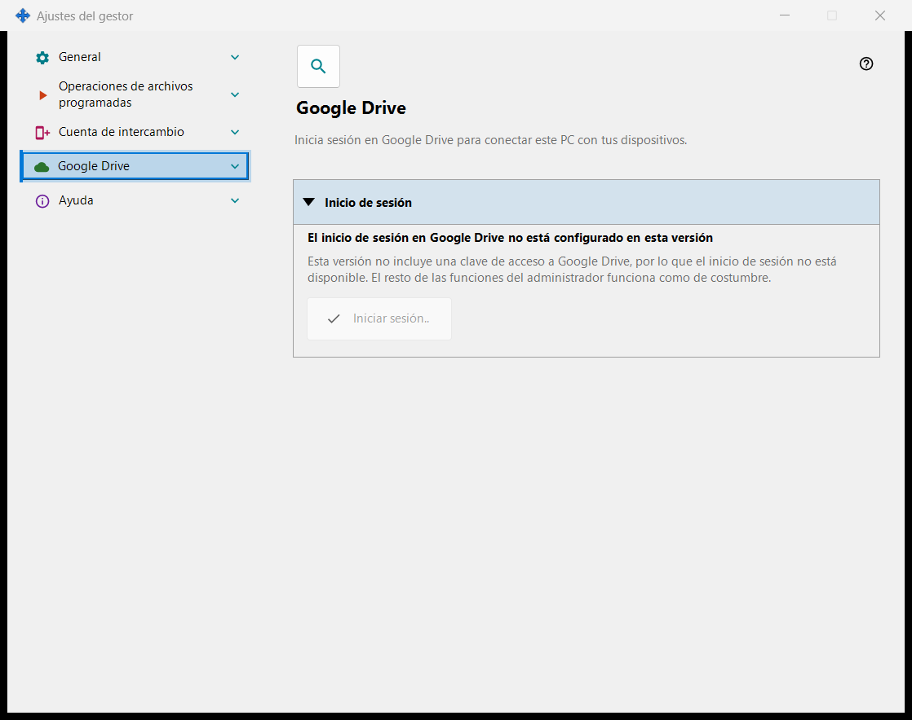
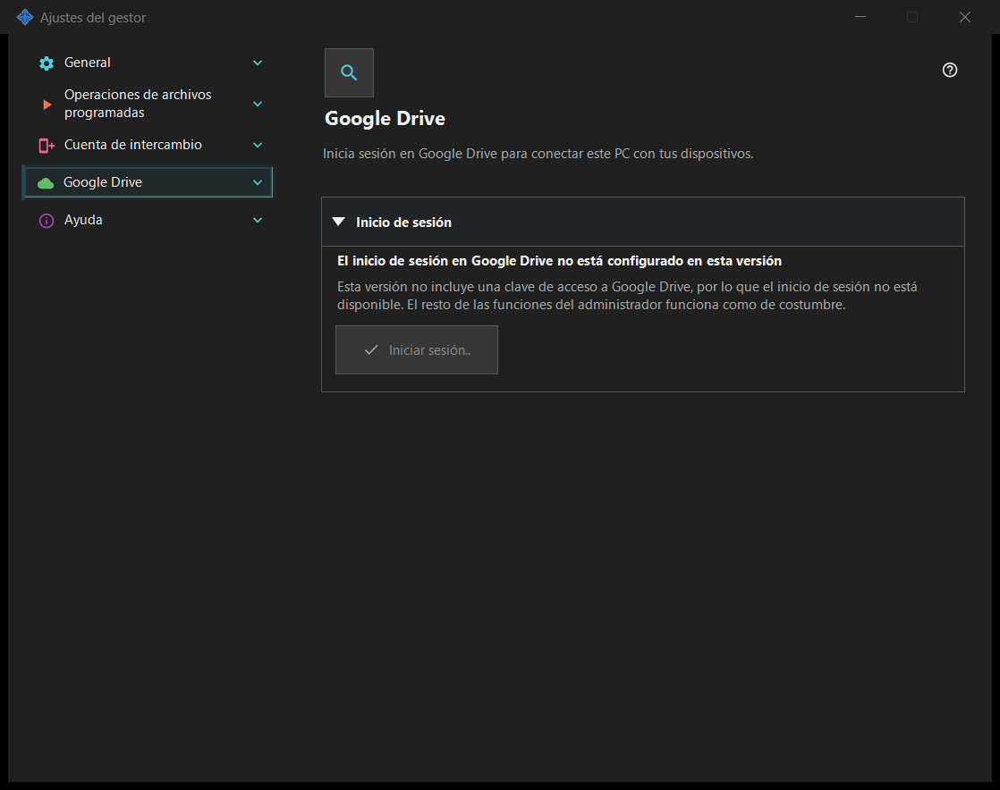

Ajustes del gestor
Ajustes del gestor
Para qué sirve
Inicio, tema, idioma, cuenta remota, publicación, portapapeles y operaciones programadas pertenecen al gestor y no requieren un servidor local. Si el componente de uso compartido SFTP está instalado, sus páginas forman un grupo en esta ventana.


En este orden
Abra desde la bandeja o los enlaces de componentes. Abrir y cerrar no inicia ni detiene servidores. El acceso remoto no requiere un servidor local.
Los elementos
Ajustes del gestor
Inicio, tema, idioma, cuenta remota, publicación, portapapeles y operaciones programadas pertenecen al gestor y no requieren un servidor local. Si el componente de uso compartido SFTP está instalado, sus páginas forman un grupo en esta ventana. Abra desde la bandeja o los enlaces de componentes. Abrir y cerrar no inicia ni detiene servidores. El acceso remoto no requiere un servidor local.
Ajustes del gestor
Inicio, tema, idioma, cuenta remota, publicación, portapapeles y operaciones programadas pertenecen al gestor y no requieren un servidor local. Si el componente de uso compartido SFTP está instalado, sus páginas forman un grupo en esta ventana. Abra desde la bandeja o los enlaces de componentes. Abrir y cerrar no inicia ni detiene servidores. El acceso remoto no requiere un servidor local.
Google Drive
- Abre Share Manager, abre «Ajustes del gestor» y elige la página «Google Drive». Necesitas una cuenta de Google y conexión a internet. La aplicación Google Drive para Windows no hace falta, y no creas tú ningún proyecto, clave ni ajuste de Google.
- Pulsa «Iniciar sesión..». El navegador predeterminado abre la página de Google: elige la cuenta, inicia sesión allí y confirma el acceso que se muestra. La contraseña se escribe solo en la página de Google, nunca en esta aplicación. Allí también puedes cancelar el inicio de sesión o denegar el acceso; entonces no se guarda nada.
- Vuelve a Share Manager: la línea en negrita dice «Sesión iniciada en Google Drive» y puedes cerrar la pestaña del navegador. Si el navegador no se abrió, comprueba tu navegador predeterminado y pulsa de nuevo «Iniciar sesión..». Si el navegador muestra un error o la página sigue mostrando «Esperando el inicio de sesión en el navegador..», pulsa «Cancelar» e inicia sesión de nuevo. El inicio de sesión se queda en este PC: tras cerrar Share Manager, cerrar la sesión de Windows o reiniciar el PC, se vuelve a usar sin el navegador mientras Google mantenga válido el acceso.
- Para intercambiar con otro dispositivo, inicia sesión también allí, con la misma cuenta de Google, en la página Google Drive de ese dispositivo: en otro PC, en su Share Manager; en un teléfono, en la aplicación para Android. Los dispositivos con sesión iniciada en cuentas de Google distintas no se ven entre sí, y en ambos hace falta una versión de la aplicación con la página Google Drive. Iniciar sesión por sí solo no envía nada: lo que pasa por Google Drive se describe en la ayuda del portapapeles, de las operaciones programadas y del grupo «Cola en Google Drive».
- La aplicación solo pide acceso a su propia carpeta oculta en tu Google Drive (ámbito drive.appdata). No ve, no examina ni sincroniza tus otros archivos de Google Drive y no recibe ni dirección de correo ni datos del perfil. Lo que tus dispositivos se pasan entre sí ocupa espacio en tu Google Drive; el grupo «Cola en Google Drive» lo muestra y te permite eliminar un paquete. «Salir en este dispositivo» elimina los registros de este PC de la carpeta oculta, revoca el acceso en Google y elimina el inicio de sesión guardado en este PC. Después, Google puede terminar el acceso también en tus otros dispositivos con la misma cuenta; si uno de ellos indica que su inicio de sesión ya no funciona, inicia sesión allí de nuevo. Para volver a conectar este PC, pulsa «Iniciar sesión..».
- Si algo sale mal, la línea bajo el estado dice qué ha pasado. Sin conexión o un error de Google: la aplicación reintenta por sí sola, no tienes que hacer nada. Inicio de sesión cancelado o acceso denegado: pulsa «Iniciar sesión..» de nuevo cuando quieras. Una cuenta gestionada por una organización cuyo administrador bloquea la aplicación: inicia sesión con otra cuenta de Google o consulta al administrador. Un mensaje de que el inicio de sesión ya no funciona: el acceso se revocó o caducó, pulsa «Iniciar sesión..» de nuevo. Sin espacio libre en tu Google Drive: libera espacio o elimina paquetes de la cola. El límite diario de subida: espera al día siguiente. «El inicio de sesión en Google Drive no está configurado en esta versión» o un mensaje de que la clave de inicio de sesión de esta instalación ya no se acepta: instala la versión actual de la aplicación desde su sitio oficial; entretanto, el resto de Share Manager funciona.
Aquí este PC inicia sesión en tu propia cuenta de Google para que la aplicación pueda usar su carpeta oculta privada en tu Google Drive. Pulsa «Iniciar sesión..»: se abre el navegador predeterminado, confirmas el acceso en Google y Google devuelve la respuesta a este PC mediante una dirección local; después puedes cerrar la pestaña del navegador. El único permiso que se solicita es el acceso a la carpeta oculta propia de la aplicación en tu Google Drive (ámbito drive.appdata): la aplicación no puede ver ningún otro archivo de tu Google Drive y no recibe ni la dirección de correo ni datos del perfil. Si Google concede un acceso distinto del solicitado, el inicio de sesión se rechaza. La línea en negrita muestra el estado. «No se ha iniciado sesión en Google Drive»: «Iniciar sesión..» está disponible; si el acceso se revocó o caducó, la línea de abajo lo indica y pide iniciar sesión de nuevo. «Esperando el inicio de sesión en el navegador..»: completa el inicio de sesión en el navegador o pulsa «Cancelar». «Sesión iniciada en Google Drive»: este PC está conectado con tu Google Drive y se muestran su nombre y su identificador corto. «Google Drive no está disponible en este momento»: la línea de abajo indica el motivo - sin conexión, límite diario de subida alcanzado, sin espacio libre en tu Google Drive o un error de Google; sin conexión o ante un error, la aplicación reintenta por sí sola. «Cerrando sesión en Google Drive..» aparece mientras se cierra la sesión. «Salir en este dispositivo» hace una sola pregunta y la respuesta predeterminada es «No». Tras «Sí» revoca el acceso en Google, elimina los registros de este PC de la carpeta oculta de tu Google Drive y elimina el token de acceso guardado en este PC; una línea bajo los botones indica cuántos registros se eliminaron o que Google no confirmó la revocación, que entonces puedes hacer en la configuración de tu cuenta de Google. En una versión sin clave de acceso de Google la página muestra «El inicio de sesión en Google Drive no está configurado en esta versión», «Iniciar sesión..» está desactivado y el resto de las funciones del administrador funciona como de costumbre. Mientras este PC tiene la sesión iniciada, los comandos del portapapeles de Share Manager también funcionan a través de Google Drive, una operación programada puede usar «A través de Google Drive» como origen o destino, y la lista de recursos del visor muestra las carpetas que tus otros dispositivos publican allí. El grupo «Cola en Google Drive» muestra lo que tus dispositivos se pasan entre sí y cuánto espacio ocupa; selecciona un paquete y pulsa «Eliminar paquete» para quitarlo de tu Google Drive. A través de Google Drive, los archivos y el portapapeles se guardan en tu propia cuenta de Google, como tus otros archivos de Google Drive; no interviene ningún servidor de intercambio.


Ajustes del gestor
Inicio, tema, idioma, cuenta remota, publicación, portapapeles y operaciones programadas pertenecen al gestor y no requieren un servidor local. Si el componente de uso compartido SFTP está instalado, sus páginas forman un grupo en esta ventana. Abra desde la bandeja o los enlaces de componentes. Abrir y cerrar no inicia ni detiene servidores. El acceso remoto no requiere un servidor local.
Ajustes del gestor
En Ayuda / Acerca de, elija Exportar registros para análisis. Recoge todos los registros locales conservados de Media Exchange Server, SFTP, instalación y auxiliares, gestor y visor, incluso con los servidores detenidos. No descarga registros remotos. Se eliminan los secretos; las fuentes truncadas, omitidas o ilegibles aparecen en la revisión y hacen que el archivo sea parcial. Enviar al autor abre un borrador con el ZIP revisado adjunto; usted decide enviarlo. Si falla el adjunto, añada el ZIP manualmente. Mostrar en el Explorador selecciona el ZIP: cópielo y péguelo en otra carpeta. Si hay errores, seleccione y copie la ruta en la revisión. El archivo se conserva tras mostrarlo o solicitar correo, incluso al cancelar el mensaje. Cancelar antes de estas acciones lo elimina. Una exportación posterior elimina archivos sin uso de más de siete días; copie el ZIP para conservarlo más tiempo. Por encima de 20 MiB se mantiene el Explorador, sin entrega al correo.
Ajustes del servidor de intercambio
Ajustes del gestor · Ajustes de uso compartido SFTP · Ajustes del servidor de intercambio